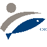
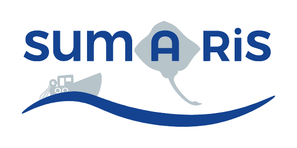

<div id="hidden" style="display:none;">
    <div id="header">
        <div id="header-left">
            <p><a href="./">Outil de collecte de données halieutiques</a> > <b>Projet ADAP</b></p>
        </div>
        <div id="header-right">
            
            
            
        </div>
        <div id="footer-left"></div>
        <div id="footer-right"></div>
    </div>
</div>

<div class="reveal">
    <!-- Any section element inside of this container is displayed as a slide -->
    <div class="slides">
        <section data-markdown data-separator-vertical="---">
            <script type="text/template">
                
                ### Les Pêcheurs de Bretagne
                # Projet ADAP - Auto-échantillonnage

            </script>
        </section>

        <section>
            <section data-markdown="projects/adap/crr/crr-22-004-reunion_suivi-2022-12-02.md">
            </section>
        </section>

        <section>
            <section data-markdown="projects/adap/crr/crr-23-001-reunion_suivi-2023-10-04.md">
            </section>
        </section>

    </div>
</div>
